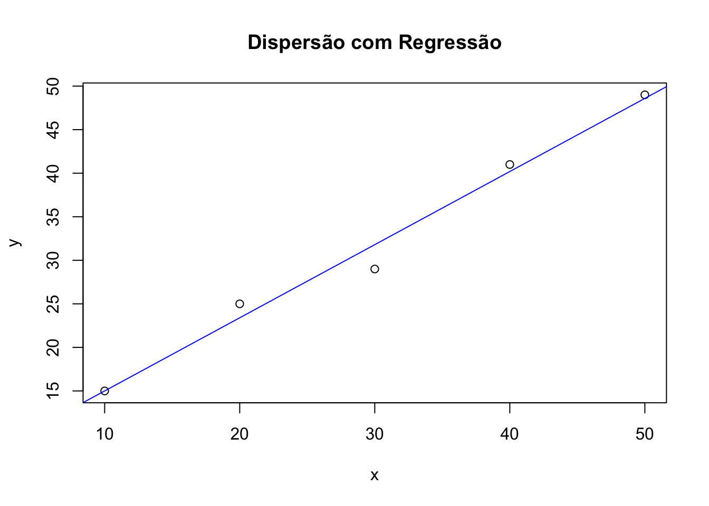

A Estatística Descritiva é a parte da estatística responsável por coletar, organizar, resumir e apresentar os dados de forma clara, sem fazer inferências ou generalizações sobre uma população maior.
O que é Estatística Descritiva?
É um conjunto de técnicas usadas para descrever as características principais de um conjunto de dados, seja por meio de:
Tabelas
Gráficosu
Medidas numéricas
Ela ajuda a entender e visualizar os dados, mas não tira conclusões além do que foi observado.
Tipos de Varíaveis
As variáveis são características que podem assumir diferentes valores.
Classificação:
Tipo de Variável
Subtipo
Exemplos
Qualitativa
Nominal
Cor dos olhos, sexo, estado
Ordinal
Grau de escolaridade, nota(A,B,C)
Quantitativa
Discreta
Número de filhos, chamadas
Contínua
Altura, peso, tempo
Análise Exploratória de variáveis Quantitativas e Qualitativas
A análise exploratória de dados (AED) tem como objetivo entender as características principais dos dados antes de aplicar modelos estatísticos. Ela varia conforme o tipo de variável: quantitativa ou qualitativa.
. Variáveis Quantitativas
São aquelas que representam valores numéricos e podem ser medidas ou calculadas (ex: altura, peso, salário, idade).
a. Medidas de Tendência Central
Indicadores do “centro” dos dados:
Média: soma dos valores dividida pelo total.
Mediana: valor central após ordenar os dados.
Moda: valor mais frequente.
b. Medidas de Dispersão
Mostram o grau de variação ou espalhamento dos dados:
Amplitude: diferença entre maior e menor valor.
Desvio padrão: média da distância dos dados à média.
Variância: desvio padrão ao quadrado.
c. Representações Gráficas
Histograma: mostra a distribuição dos valores em intervalos.
Boxplot (diagrama de caixa): destaca a mediana, quartis e outliers.
Gráfico de densidade: versão suavizada do histograma.
. Variáveis Qualitativas
Frequência Absoluta
É o número de vezes que uma categoria aparece.
Exemplo: 20 pessoas preferem o produto A.
Frequência Relativa
É a proporção ou percentual que uma categoria representa dentro do total.
Cálculo:
\(\text{Frequência relativa} = \frac{\text{Frequência absoluta}}{\text{Total de observações}} \times 100\%\)
Gráficos Usados
Gráfico de Barras
Cada barra representa uma categoria.
A altura da barra mostra a frequência (absoluta ou relativa).
É o gráfico mais comum para variáveis qualitativas.
Gráfico de Setores (Pizza)
Cada “fatia” representa uma categoria proporcionalmente à sua frequência relativa.
Útil para mostrar percentuais de participação.
Gráfico de Pareto
Combina gráfico de barras com linha acumulada.
As categorias são organizadas da mais frequente para a menos frequente.
Ajuda a identificar o “pouco que causa muito” (Princípio de Pareto – 80/20).
# Exemplo com dados fictíciossexo <-c("F", "M", "F", "F", "M")idade <-c(23, 25, 22, 26, 28)# Tabela de frequênciatable(sexo)
A análise bidimensional (ou análise bivariada) tem como objetivo investigar a relação entre duas variáveis. Dependendo do tipo de variável (qualitativa ou quantitativa), utilizam-se métodos diferentes para essa análise.
Tipos de análise:
• Tabela de contingência:
Usada quando ambas as variáveis são qualitativas (ou categóricas).
Mostra a frequência conjunta de ocorrência das categorias das duas variáveis.
Permite analisar se existe dependência ou associação entre elas.
Exemplo: Uma tabela cruzando gênero (masculino/feminino) e preferência de produto (A/B/C).
• Diagrama de dispersão:
Utilizado quando ambas as variáveis são quantitativas.
Cada ponto no gráfico representa um par de valores (x, y).
Permite visualizar a forma da relação entre as variáveis: linear, exponencial, nenhuma, etc.
Exemplo: Analisar a relação entre tempo de estudo e nota em uma prova.
• Coeficiente de correlação (r): força e direção da relação linear.
Mede a força e a direção da relação linear entre duas variáveis quantitativas.
Varia entre -1 e +1:
Valor de r
Interpretação
\(r = +1\)
Correlação perfeita positiva
\(r= -1\)
Correlação perfeita negativa
\(r= 0\)
Sem correlação linear
\(0.7 <= |r| < 1\)
A correlação é forte, seja ela positiva (r > 0) ou negativa (r < 0)
\(0.3 <=|r| < 1\)
A correlação é modera, seja ela positiva (r > 0) ou negativa (r < 0)
\(0 <|r|<0.3\)
A correlação é fraca, seja ela positiva (r > 0) ou negativa (r < 0)
Importante: correlação não implica causalidade.
Exemplo: Se r = 0.85, há forte correlação positiva: à medida que uma variável aumenta, a outra tende a aumentar também.
• Regressão linear simples: modela relação entre duas variáveis numéricas.
Call:
lm(formula = y ~ x)
Residuals:
1 2 3 4 5
8.547e-16 1.600e+00 -2.800e+00 8.000e-01 4.000e-01
Coefficients:
Estimate Std. Error t value Pr(>|t|)
(Intercept) 6.6000 2.0265 3.257 0.047244 *
x 0.8400 0.0611 13.748 0.000833 ***
---
Signif. codes: 0 '***' 0.001 '**' 0.01 '*' 0.05 '.' 0.1 ' ' 1
Residual standard error: 1.932 on 3 degrees of freedom
Multiple R-squared: 0.9844, Adjusted R-squared: 0.9792
F-statistic: 189 on 1 and 3 DF, p-value: 0.0008329
# Plotplot(x, y, main="Dispersão com Regressão")abline(modelo, col="blue")

Esse é o resultado de uma regressão linear simples obtida em R com o modelo lm(y ~ x). Vamos interpretar detalhadamente cada parte do output:
Resumo do Modelo
y = 6,6 + 0,84x
1.Coeficientes (Estimate)
Termo
Valor
Interpretação
(Intercept)
6.6000
Quando x = 0, a previsão de y é 6.6
x
0.8400
A cada aumento de 1 unidade em x, y aumenta em média 0.84 unidades
2. Significância dos Coeficientes
Termo
Pr(>|t|)
Interpretação
(Intercept)
0.047244
Significativo ao nível de 5% ()
x
0.000833
Muito significativo (**)
A variável x tem um forte efeito estatístico sobre y, com baixo p-valor (menor que 0.001)
Como interpretar esses valores:
O p-valor mede a probabilidade de obter um coeficiente igual ou mais extremo, assumindo que ele é nulo (sem efeito).
Se o p-valor for menor que 0,05, consideramos o coeficiente estatisticamente significativo (ao nível de 5%).
Códigos de significância usados em R:
Código
Nível de significância
***
p<0.001
**
p<0.01
*
p<0.05
.
p<0.1(marginalmente significativo)
(vazio)
p>= 0.1(não significativo)
3. Erro padrão residual
\(\text{Residual standard error} = 1.932\)
→ Em média, o modelo erra em cerca de 1,93 unidades de y.
4. R² (R-squared)
\(R^2 = 0.9844\)
→ O modelo explica 98,44% da variação de y com base em x.
É um modelo extremamente ajustado aos dados.
5. Estatística F
\(F = 189,\quad p\text{-value} = 0.0008329\)
→ Indica que o modelo é estatisticamente significativo como um todo.
Há evidências fortes de que pelo menos um coeficiente (neste caso, x) é diferente de zero.
Conclusão:
O modelo é forte e ajustado.
A variável x é altamente significativa.
R² muito alto indica que quase toda a variação de y é explicada por x.
O modelo pode ser confiável para previsão e interpretação, com base nessa amostra.
EXEMPLOS COMPUTACIONAIS EM R E PYTHON
Dataset real (opcional para prática):
• iris, mtcars, penguins (R)
• seaborn.load_dataset(‘iris’), titanic (Python)
Recursos online:
• Kaggle Datasets
• UCI Machine Learning Repository
Referências Gerais Complementares
1. Triola, M. F. Introdução à Estatística.
2. Bussab, W. O., Morettin, P. A. Estatística Básica.
3. Moore, D. S. et al. A Prática da Estatística.
4. Tukey, J. W. Exploratory Data Analysis.
5. McKinney, W. Python for Data Analysis, O’Reilly, 2022.
6. Wickham, H., Grolemund, G. R for Data Science, O’Reilly, 2017 (acesso livre: r4ds.had.co.nz).